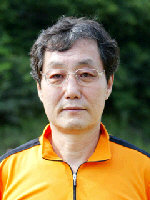
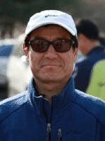
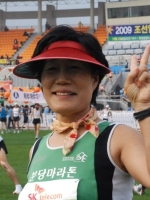
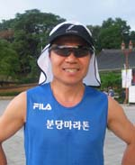

초대 |
성명 : 김영백 회원번호 : 101번 임기 : 1999.6 ~ 2004.5 | 2대 |
성명 : 신의성 회원번호 : 110번 임기 : 2004.6 ~ 2006.5 |
3대 |
성명 : 권영주 회원번호 : 107번 임기 : 2006.6 ~ 2008.5 |
4대 |  |
성명 : 이종창 회원번호 : 208번 임기 : 2008.6 ~ 2010.5 |
5대 |  |
성명 : 박희선 회원번호 : 808번 임기 : 2010.6 ~ 2011.12 |
6대 |  |
성명 : 김경아 회원번호 : 539번 임기 : 2012.1 ~ 2012.12 |
7대 |  |
성명 : 전제원 회원번호 : 319번 임기 : 2013.1 ~ 2013.12 |
Copyright ⓒ by 분당마라톤클럽. All rights reserved. |